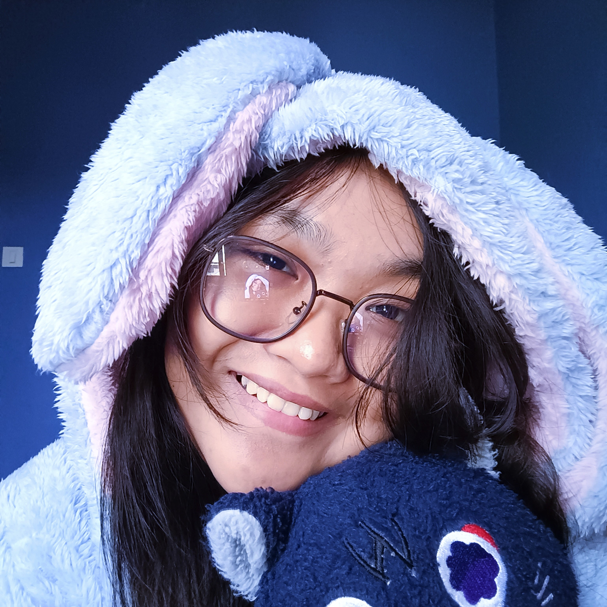

About Me
"There's no such thing as pure freedom in this world.
Even the wind cannot blow on forever"
Micah Jolie N. Ocañada
1st year BS Computer Science
"There's no such thing as pure freedom in this world.
Even the wind cannot blow on forever"
1st year BS Computer Science
This website is designed to compile all first-semester topics into a
single, comprehensive resource. It brings together PowerPoints,
documents, and portfolio analyses into a user-friendly platform that
serves both as a study tool and a showcase of my learning journey.
Students enrolled in this program, as well as other students pursuing
similar academic paths or disciplines, may greatly benefit from the
comprehensive compilation of materials and detailed analyses
provided.
These resources can serve as valuable study aids, helping them deepen
their understanding of key concepts, enhance their critical thinking
skills, and reinforce their knowledge base. Additionally, the
insights
offered by these analyses could be particularly useful for group
discussions, research projects, and exam preparation, ultimately
fostering a collaborative and enriched learning environment across
related fields.